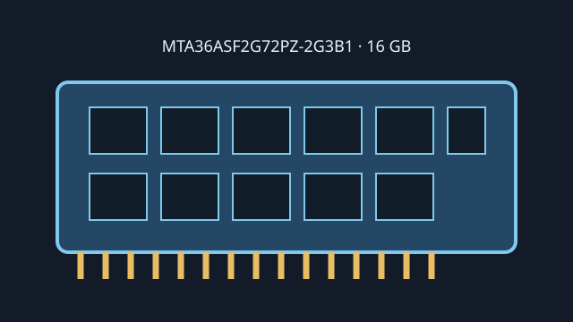

[ MICRON // MODEL RECORD ]
MTA36ASF2G72PZ-2G3B1
A Micron 16 GB DDR4 server module with a registered interface and system-level ECC. This record identifies the exact module SKU; confirm the suffix and revision from the physical DIMM.

Model specifications
| Capacity / module | 16 GB; 288-pin DDR4 RDIMM |
|---|---|
| Rank / chip organization | 2Rx4; dual-rank x4 DRAM organization. Module bus is x72 (64 data + 8 ECC bits). |
| Speed / JEDEC | DDR4-2400, 2400 MT/s (PC4-19200R); JEDEC CL17 at the rated speed. |
| Voltage | 1.2 V nominal DDR4 VDD/VDDQ. |
| ECC / buffering | ECC Registered DIMM (RDIMM), not UDIMM or LRDIMM. |
| Platform compatibility | Requires a DDR4 system with CPU, board and firmware supporting 16 GB 2Rx4 RDIMMs and at least DDR4-2400. Intel Xeon Scalable 3rd Gen supports DDR4 to 3200 MT/s; actual operation follows the module SPD and host population/QVL restrictions. Verify the exact server model before use. |
Service and compatibility notes
- Registered ECC must be supported end-to-end by the memory controller and board; ECC capability alone is insufficient.
- Match generation, registered status, density, rank and population order to the system's service manual.
- Store the physical label, SPD readout and host configuration together when preserving or diagnosing the module.
Manufacturer & standards sources
- Micron — MTA36ASF2G72PZ-2G3B1 part recordManufacturer part-specific catalog reference.
- Micron — RDIMM part catalogManufacturer product catalog for registered memory modules.
- Intel — Xeon Gold 6338 specificationsCPU DDR4 memory support context; not exact-SKU validation.
- JEDEC — JESD79-4 DDR4 SDRAM standard